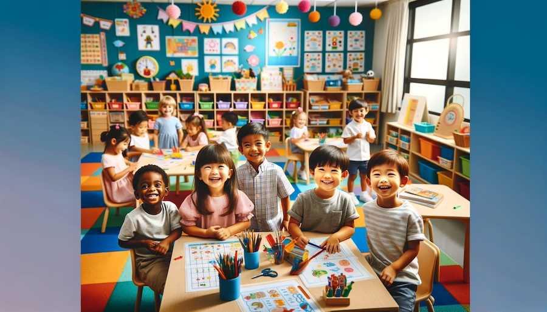

Enhancing Preschool Safety: Singapore's CCTV Initiative
In the wake of rising concerns about child safety, Singapore has taken a significant step forward by mandating the installation of CCTV cameras in all preschools by July 2024. This groundbreaking move by the Early Childhood Development Agency (ECDA) reflects a growing global emphasis on safeguarding our youngest learners. As we delve into this initiative, we'll explore not only its implications but also the broader context of ensuring a safe and nurturing environment for children during their crucial early years of education.
This initiative marks a pivotal moment in Singapore's commitment to child welfare and education. By integrating advanced surveillance technology into preschool settings, the nation aims to reinforce a culture of safety, transparency, and accountability. This move is a testament to Singapore's proactive approach in addressing parental concerns and enhancing the overall standard of early educational experiences.
Benefits of CCTV in Preschools
The introduction of CCTV cameras in preschools across Singapore is poised to bring a multitude of benefits, fundamentally enhancing the safety and security of young learners. This initiative is not just about monitoring; it's about creating a proactive approach to child safety.
- Enhanced Child Safety: One of the primary benefits of installing CCTV cameras is the significant increase in child safety. Continuous monitoring ensures that any untoward incidents or emergencies are quickly noticed and addressed, reducing the response time and potentially preventing accidents.
- Peace of Mind for Parents: Knowing that their children are under constant surveillance while at preschool provides parents with a much-needed sense of reassurance. This initiative helps bridge the gap between parents and childcare providers, fostering trust and openness.
- Aid in Staff Training and Development: The footage obtained from these cameras can also be an invaluable resource for staff training. By reviewing daily interactions and activities, educators can identify areas for improvement, ensuring that the highest standards of childcare are maintained.
- Documentation for Incident Investigation: In the unfortunate event of an incident, CCTV footage serves as a crucial piece of evidence. It aids in understanding the sequence of events and can be pivotal in resolving disputes or misunderstandings between staff and parents.
- Responsible Behavior: The presence of cameras can encourage better behavior from everyone in the preschool environment. Staff may become more vigilant, and even children can learn the importance of adhering to rules and engaging in safe practices.
Through these multifaceted benefits, the ECDA's initiative represents a significant step forward in the journey towards a safer, more secure, and transparent educational environment for Singapore's youngest learners.
Challenges and Considerations
Implementing CCTV systems in preschools, while beneficial, also brings certain challenges and considerations that need to be addressed:
- Balancing Security with Privacy: One of the primary concerns is maintaining a balance between ensuring safety and respecting privacy. It's crucial to establish clear guidelines on who can access the footage and under what circumstances, to prevent any potential misuse of the surveillance data.
- Technical and Financial Implications: The installation of CCTV systems involves technical challenges, including the integration with existing infrastructure, ensuring high-quality video feed, and managing data storage. Additionally, the financial aspect can be significant, especially for smaller preschools, as they navigate the costs of installation, maintenance, and potential upgrades.
- Training and Familiarization: Staff and administrators will require training not only in the technical aspects of operating the CCTV system but also in understanding the legal and ethical implications of surveillance in a childcare setting.
- Data Security and Management: With the increasing amount of data being collected, there's a need for robust data security measures to protect against unauthorized access and cyber threats. Proper data management protocols must be established to handle the vast volumes of video footage.
- Community Engagement and Feedback: Engaging with parents, staff, and the wider community is essential for the successful implementation of this initiative. Gathering feedback and addressing concerns will be crucial in ensuring that the CCTV system is accepted and effectively integrated into the preschool environment.
By proactively addressing these challenges, preschools in Singapore can effectively leverage CCTV technology to enhance child safety, while also ensuring that the rights and concerns of all stakeholders are respected and addressed.
Parental Perspectives and Responses
The implementation of CCTV cameras in Singapore's preschools has elicited a range of responses from parents, reflecting a diverse spectrum of opinions and concerns.
Many parents have expressed strong support for the initiative, highlighting the increased sense of security and reassurance it brings. The ability to monitor their children's safety throughout the day is a significant relief for parents, especially in a time where safety concerns are at an all-time high. This move by the ECDA is seen as a proactive step in ensuring the wellbeing of their children, aligning with the parents' desire for a safe educational environment.
However, some parents have also voiced concerns, particularly around privacy and the potential for surveillance overreach. Questions have been raised about who will have access to the footage, how it will be used, and the safeguards in place to protect their children's privacy. There is a call for transparency in the operation of these CCTV systems, with clear guidelines and communication from preschools to parents.
Additionally, parents are interested in how the footage will be utilized in case of incidents. The ability to review footage in serious situations is viewed as a positive step towards transparency and accountability in childcare. Parents expect that this access will be handled with utmost sensitivity and confidentiality, ensuring that the footage is used solely for the intended purpose of safeguarding children.
Overall, while there is broad support for the initiative, it is accompanied by an expectation of responsible implementation. Parents seek assurance that the CCTV system will enhance child safety and not infringe upon the privacy and rights of the children. As this initiative moves forward, continued dialogue and collaboration between preschools and parents will be key to addressing these concerns and ensuring the success of the program.